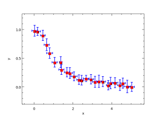

Nodes of different colours represent the following:
Solid arrows point from a procedure to one which it calls. Dashed arrows point from an interface to procedures which implement that interface. This could include the module procedures in a generic interface or the implementation in a submodule of an interface in a parent module.
Nodes of different colours represent the following:
Solid arrows point from a procedure to one which it calls. Dashed arrows point from an interface to procedures which implement that interface. This could include the module procedures in a generic interface or the implementation in a submodule of an interface in a parent module.
subroutine doError
!! 
integer,parameter::N = 25
real(wp),dimension(N)::x,y,xe,ye
real(wp),dimension(12)::r
real(wp)::m,s
integer::k
x = linspace(0.0_wp,5.0_wp,N)
y = 1.0_wp/(x**2+1.0_wp)
do k=1,N
call random_number(r)
r = 0.25_wp*(2.0_wp*r-1.0_wp)
m = sum(r)/real(size(r))
s = sqrt(sum((r-m)**2)/real(size(r)-1))
x(k) = x(k)+m
xe(k) = s
call random_number(r)
r = 0.15_wp*(2.0_wp*r-1.0_wp)
m = sum(r)/real(size(r))
s = sqrt(sum((r-m)**2)/real(size(r)-1))
y(k) = y(k)+m
ye(k) = s
end do
call figure()
call subplot(1,1,1)
call xylim(mixval([x-xe,x+xe])+[-0.5_wp,0.5_wp],mixval([y-ye,y+ye])+[-0.2_wp,0.2_wp])
call errorbar(x,y,xerr=xe,yerr=ye,lineColor='b',lineWidth=1.0_wp)
call plot(x,y,lineStyle='',markStyle='s',markColor='r',markSize=1.5_wp)
call ticks()
call labels('x','y','')
end subroutine doError